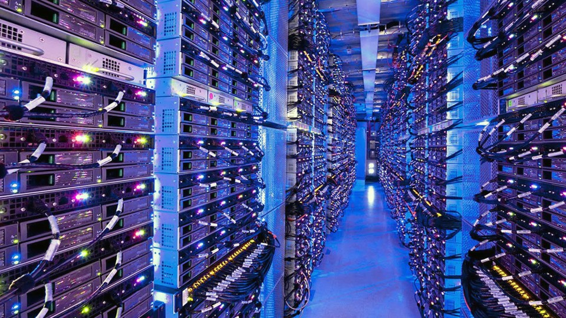

ABS
company The Choice of the world

In this web side you wil learn mor about computer science.Plece click these links it will take where you want to go.COMPUTER SCIENCE IN TODAY WORLD this will give you more information about computer science.SOLVING TECHNICAL PROBLEMS this will give you more information about how to solve technical problem by using code.SOLVING NETWORK PROMBLEMS this will give you some tips and tricks about solving nework problems.OUR GOALS this will giv you more information about what we want to achive.MORINFORMATION this will give you more information about our company
Computer Science in tody's world
Since 1791 the computer scientist exsist in this world,they make the life easier with people .They creat the Software for the phon's they creat Laptops and they creat networks for people to conect to each order.They creat internet for people to do there bussnies and for peoole to make mony and to work aswell and soo many things out ther.
The first computer scientist of all time is Charles Barbbage.{Born in December 26,1791,London,Egland-Died October 18,1771,London)Eglish mathemativian and inventor who is credited with having conceived the first automatic digital computer.Since he past a way there more computer scientist who come behind him to push the work faward,and to continu inventing mor part's of computers even tho he is the one who come up with the idea .Now day's computers become part of our life,and we have more types of computer's.We have Micro computer ,super computer ,and many more.The types of Computers we have now days are Laptop's,Disk top,Mobile phon,and Telephon,and many more

ABS company is a World wide teachnology company thas work on invetn things for the world to
make life easyier for the people,and to zprotect the worlde.ABS was created in 2021 by a Bradford
college Student called Abubacarr Sumbundu.Abubacarr Sumbundu was a computer scientist,and the
concept came to his mine back in college,where he began to code by his brother Ahmad Sillah.
Ahmed was the one who who gave hime a concept of how to code.Aubacarr began to code for hime
after undastaning the generall concepte his brother tought hime.He began to deverlpe hime selfe
on til he creat his first website called ABS Websidte.
Percentage of our produc's
| GSM cmopany | 100% |
| Airplane | 98% |
| Cars | 77% |
| Car mechanic | 100% |
| Sowftware | 100% |
This what we make in our first eayer as a bussnies compnay establish in 2021.It a great celebrations to make this amount of millions
as new company make over $623B.Bussnies is about to take a risk and love what you do,and ready to deal with difficultys.
We will continu to work as team,becous this job is not a one man job.Thanks to all ABS staffs and this eayer we are the one who won the world best company
aword in Losanjalos United State of America infront of Tesla and Amazon.We are happy thnk you Alaah.
Technical problem solving
A BSworks on some many diffrent teachnology such as Air plane's, Car Vechicle,GSM network, Software disign,And we creat A new Model of Computer Callied ABS computer Using Lobs opratingg system.The reason why ABS have more ambition number: 1-is the world is increzing and we need more teacnology to be adobted .Thas why we have the ambitions to buitld a new Oprating stystm that can build more new teachnology's.The Oprating system should be wandaful than this order oprating system such as Widows ,Marks OS,and Linux Oprating stystem.2 is to build a Programing Lanuege that will you to writte any kind of code you wana writte either the code is realeted to Networking or building software or extra,And we will make sur the programing languege should be the best in the world In sha Alaah that our ambition .
Solving network problem
In 2021 ABS has a the best data Center and gsm in the world.We offer best 6G netword around the world.We are oprating in somany diffrent countrys the world, and every body aprecite what we do.AS an compau our deram is not to realia on one thing.

Our goal is to solve the problem of the worlde
ABScompany use mordern algorithm to solve teachnical problems.Algorithe to solve problem by making the world eayier for people to build good teacnology product that can make people life easyier,and we can do it with our knowlege.
We are here to learn from every body and we are ready to haire people with experience with degree or with no degree,but we prefar does who got the degree becaous there the one who have more undastanding in the feild.They should undastand more about data sture and algorithm and many more on computer science feild .Tha why i will always encoreg people to go to Uiversity if they can do it because is very importand ,and it will allowd you to work with order people who have more experience than you,so that you can learn from them .The second thing that make want a University is the Degree because there some satain possition on some satain company they will note allowed to be a maneger without any degree.
More things to know about ous
You can click here if want to go back to top
We allso work with big company like CIA of cambridge and googel is among the companys that are pushing the world at the moment in terms of teacnology and in terms of indostrial matrial,and there are among the Companys that are hairing more Software egineers at the world right now and Facebooked of Marck Zugerberg also hraring more people,but for me as a computer Sciece student my intenstion is to be an employee of any bady.